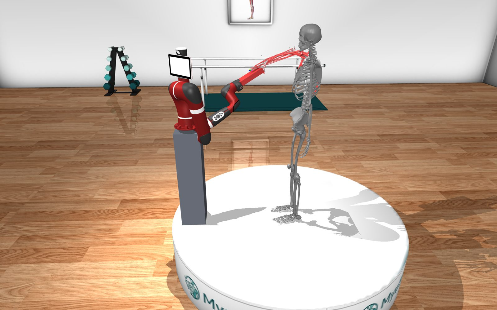
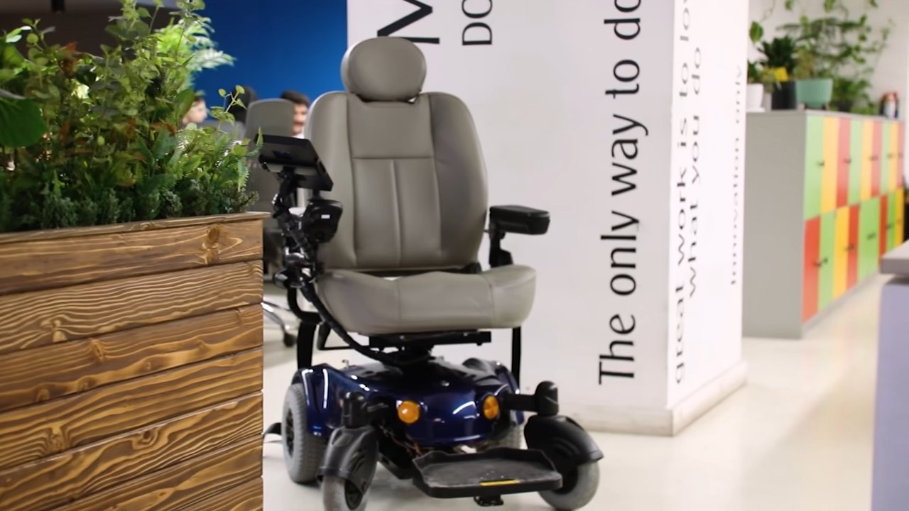
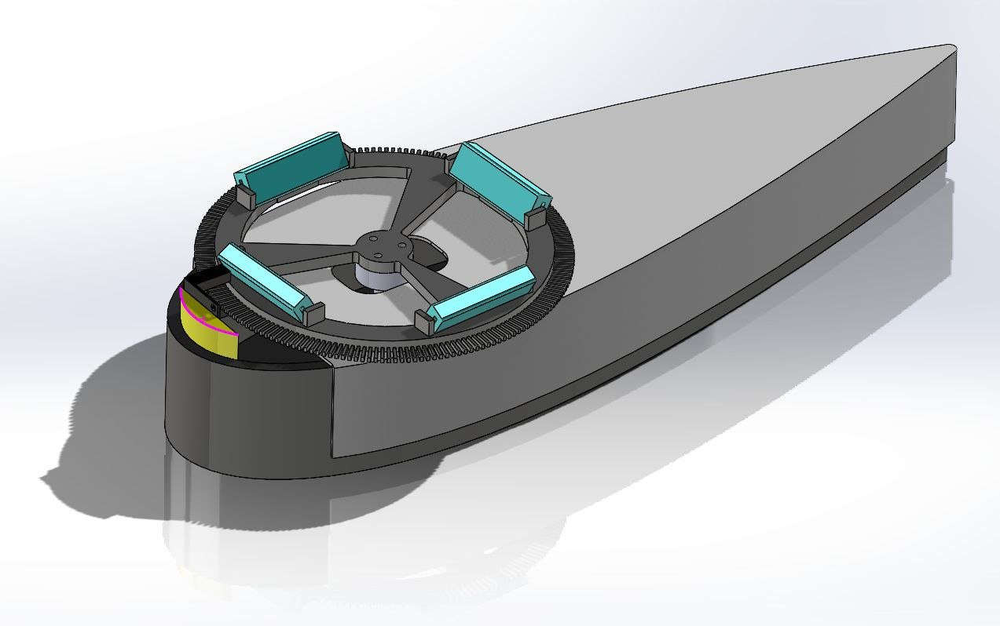
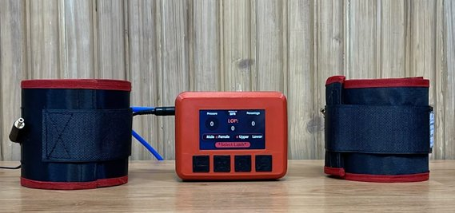
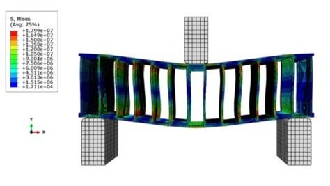

I am a robotics and control engineer finishing an M.Sc. in Mechanical Engineering at McGill University (NeuRoc Lab). I work on manipulator control and physical human–robot interaction, model predictive control (MPC), reinforcement learning and state estimation. In my thesis I study admittance–impedance co-manipulation between a robot arm and a person with tremor, and I am now taking it onto a real Franka Research 3 arm. Before that I worked on ROS 2 navigation and sensor fusion for a smart wheelchair at a robotics startup, and on embedded hardware for a medical device.

Robotics and Control Engineer, in the final year of an M.Sc. at McGill.
I like control problems where the model is never quite right: an autonomous wheelchair with no access to precise localization such as GNSS, a quadruped picking up a payload, a cobot sharing a load with a person whose hand trembles. My work is building models good enough to control with, and controllers robust enough to cope with what the models miss.
At McGill's NeuRoc Lab I tune a robot arm under Cartesian admittance–impedance control while it is physically coupled to a MyoSuite musculoskeletal arm model in MuJoCo, and I use reinforcement learning to train that musculoskeletal model to move and perform a task. Across the controller gains, I map the trade-off between load support, intent following and tremor attenuation as the basis for an assistive co-manipulation strategy. I am now applying the controller to a real Franka Research 3 (FR3) arm. I am also a teaching assistant for four mechanical engineering courses, including Control Systems and Applied Electronics & Instrumentation.
Alongside my M.Sc., I worked as a Robotics Engineer at a robotics startup on the ROS 2/Nav2 navigation, EKF sensor fusion and MPPI controller tuning of a smart wheelchair. For my B.Sc. thesis I derived the full-body dynamic model of a quadruped and ran real-time MPC in MuJoCo, with reinforcement learning correcting what the model misses. Before that, as an R&D robotics engineer, I designed the entire electrical system of a blood flow restriction medical device and helped build it by hand. I'm looking for robotics, control and mechatronics work where models meet hardware.
Control and robotics work across industry and research.
How should a robot arm share a load with a person who has tremor? In simulation, I tuned and evaluated a Cartesian admittance–impedance controller on a robot arm physically coupled to a MyoSuite musculoskeletal arm model, and I am now applying it to a real Franka Research 3 arm.
Full-body dynamic model of a quadruped and real-time MPC in MuJoCo, with reinforcement learning to correct model errors and online identification of an added payload.

GNSS-free navigation and motion control for an electric wheelchair that drives indoors, built at a robotics startup on ROS 2 and Nav2.

A robotic fish I designed and built end to end, used to test sim-to-real autonomous control in a water tank.

A working medical device prototype that sets cuff pressure from each user's measured limb occlusion pressure. I designed its entire electrical system and helped fabricate the device.

Finite element models of composite and 3D-printed structures, checked against experiments and used to compare designs before fabrication.
Course and research projects in kinematics, dynamics, control and planning.
Industry, research and teaching.
What I bring to a control or robotics team.
Model predictive control (MPC), optimal control, Cartesian admittance and impedance control, MPPI tuning, reinforcement learning for control, feedback design, MATLAB/Simulink
ROS 2, Nav2, EKF sensor fusion and state estimation, manipulator kinematics (FK/IK), dynamic modelling, MuJoCo, MyoSuite, NVIDIA Isaac Sim, Gazebo, URDF
STM32, ESP32, FreeRTOS, SPI/I2C/UART, circuit and electronic board design, signal processing, oscilloscope debugging, prototyping and fabrication
Python, C/C++, MATLAB, Linux (Ubuntu), Git, CAD (including CATIA)
mostafa.kaviri1378@gmail.com · LinkedIn · GitHub · Download CV (PDF)